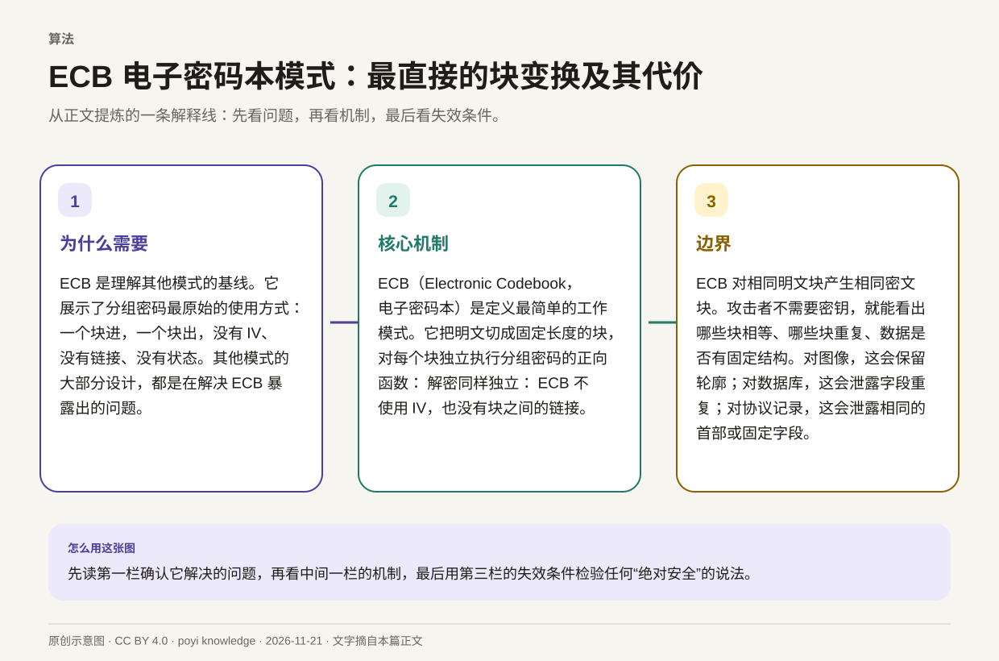
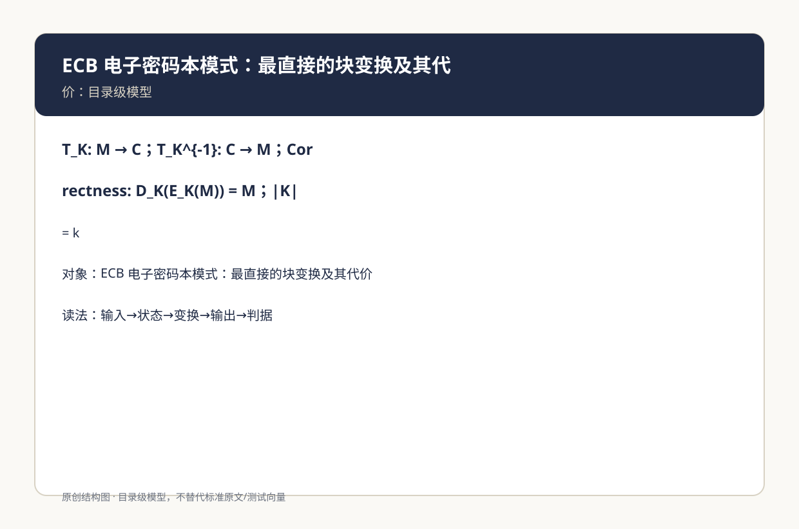

原理与机制
算法：ECB 电子密码本模式（Electronic Codebook）。ECB（Electronic Codebook，电子密码本）是定义最简单的工作模式。它把明文切成固定长度的块，对每个块独立执行分组密码的正向函数：
C_j = E_K(P_j)
P_j = D_K(C_j)
ECB 不使用 IV，也没有块之间的链接。每个块的加密或解密只依赖密钥和该块本身，因此多个块可以并行处理，也可以单独访问某个块。ECB 要求输入是完整块的序列。SP 800-38A 规定 ECB 的明文长度必须是块长的整数倍；不足一个块时如何填充，属于应用或协议层的选择。本文的教学实现采用 CMS 的 PKCS#7 规则：补 1 到块长个字节，每个字节的值等于补入字节数。ECB 不改变底层分组密码的块大小或密钥长度。它只是把同一个 E_K 或 D_K 独立地重复到每个块上。

为什么重要
ECB 是理解其他模式的基线。它展示了分组密码最原始的使用方式：一个块进，一个块出，没有 IV、没有链接、没有状态。其他模式的大部分设计，都是在解决 ECB 暴露出的问题。ECB 的问题也同样基础：在同一个密钥下，相同的明文块总是得到相同的密文块。对图像、数据库记录、重复字段或任何结构化数据，攻击者可以直接看出重复模式。SP 800-38A 明确写道：如果这种性质在应用中不可接受，就不应使用 ECB。因此，ECB 适合作为教学起点和单块变换的参考，不适合作为新系统对多块数据的通用加密模式。理解 ECB 的代价，比记住 ECB 不安全这句话更重要。
应用与实例
ECB 是 FIPS 81 在 1980 年为 DES 定义的第一种模式，也是后来 SP 800-38A 推广到通用分组密码的五种模式之一。它的历史地位来自它最直接地把分组密码用于数据，而不是来自它对多块数据的保护能力。在单块、无重复、随机性或格式本身不敏感的场景，ECB 的确定性不会额外泄露结构；但真实数据往往有重复和结构，因此不能由某个单块示例可用，推广到多块数据可以安全使用 ECB。现代系统若需要多块机密性，通常选择带 IV 的模式或 AEAD；是否仍使用 ECB，必须按具体协议和数据形态判断，不能仅凭底层是 AES 就认为安全。

边界与攻击面
ECB 对相同明文块产生相同密文块。攻击者不需要密钥，就能看出哪些块相等、哪些块重复、数据是否有固定结构。对图像，这会保留轮廓；对数据库，这会泄露字段重复；对协议记录，这会泄露相同的首部或固定字段。### 无 IV、无链接
ECB 没有 IV，因此也不存在IV 可预测或IV 重用的问题；但它也没有任何位置混淆。块的顺序和边界仍然可见，删除、重排或复制密文块会直接对应到明文块。### 无完整性
ECB 只提供机密性，不提供完整性。修改一个密文块会修改对应的明文块，攻击者可以做受控替换；ECB 本身无法检测这种修改。需要完整性时，必须使用 AEAD 或外加 MAC。### 块大小与数据量
ECB 不改变底层块大小。使用 64 位块的分组密码时，大量块下仍受生日界限制；使用 128 位块可以推迟这个边界。ECB 的确定性问题与块大小无关，换 AES 也不会消除重复块泄露。ECB 要求完整块；填充规则和填充错误的处理属于协议层。填充本身不能提供完整性，也不能阻止相同明文块产生相同密文块。本文教学实现只演示 AES-128-ECB 的公式、官方向量、重复块和固定数据的独立块性质。它不实现安全的填充校验、密钥管理、协议状态机或侧信道防护，不能用于生产环境。
历史与背景
1980 年，FIPS 81 为 DES 定义了 ECB 模式。它是最早被标准化的分组密码使用方式之一，使一个块变换可以处理多块数据。2001 年，SP 800-38A 把 ECB 推广到通用分组密码，并给出 AES 测试向量。ECB 的长期使用也让它成为最典型的反面教材：算法正确、模式错误，仍然会泄露数据结构。后来的 CBC、CFB、OFB、CTR 和 AEAD，都在不同程度上回应了 ECB 的确定性问题。这段历史说明，ECB 不是错误的算法，而是一个边界极窄的模式：它只适合不需要隐藏块间关系的场景；把它用于结构化多块数据，就是把模式的性质当成系统的安全属性。
逐步示例与核验
复算示例
取标准或公开测试向量中的一组参数，按“输入—执行—输出”记录：先写出该条目的形式式 (C=E_K(P;r),\qquad P=D_K(C))；再按规范顺序执行每一步，最后把输出与独立实现或标准向量逐字节对照。若没有可引用的数值向量，就只记录结构步骤，不伪造输出。
参考出处
- Wikipedia search entry for ECB 电子密码本模式. https://zh.wikipedia.org/w/index.php?search=ECB%20%E7%94%B5%E5%AD%90%E5%AF%86%E7%A0%81%E6%9C%AC%E6%A8%A1%E5%BC%8F
- Handbook of Applied Cryptography (Menezes, van Oorschot, Vanstone). https://www.cacr.math.uwaterloo.ca/hac/